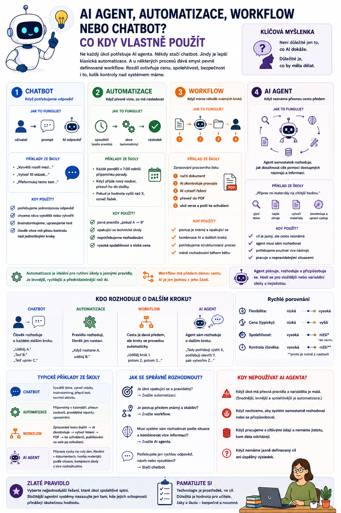

Ne každý úkol potřebuje AI agenta. Někdy stačí obyčejný chatbot. Jindy je lepší klasická automatizace. A u některých procesů dává smysl pevně definované workflow. Rozdíl mezi těmito přístupy není jen technický. Ovlivňuje cenu, spolehlivost, bezpečnost i to, kolik kontroly nad systémem máme.

Ne všechno, co používá AI, je agent
S nástupem agentní AI vznikl trochu zvláštní trend.
Najednou se slovem agent označuje téměř všechno.
AI vytvoří text?
AI použije vyhledávání?
AI spustí dva nástroje?
Jenže tak jednoduché to není.
Pro běžnou praxi je užitečnější rozlišovat minimálně čtyři typy systémů:
Každý se hodí na něco jiného.
1. Chatbot: když potřebujeme odpověď
Chatbot je nejjednodušší varianta.
Člověk něco zadá.
AI odpoví.
Například:
- „Vysvětli mi rozdíl mezi Evropskou radou a Radou Evropské unie.“
- „Vytvoř deset otázek na Past Simple.“
- „Přeformuluj tento text tak, aby mu rozuměli žáci prvního ročníku.“
Typický princip je:
Chatbot může být velmi schopný.
Může pracovat s obrázky, soubory, webem nebo dalšími nástroji.
Ale pokud uživatel stále řídí jednotlivé kroky, máme stále spíše interaktivního asistenta než autonomnějšího agenta.
Kdy použít chatbot
Chatbot je vhodný, když:
- potřebujeme jednorázovou odpověď,
- chceme něco vysvětlit,
- vytváříme návrh,
- upravujeme text,
- brainstormujeme,
- člověk chce mít průběh práce plně pod kontrolou.
Například:
„Navrhni mi aktivitu na 15 minut k tématu lidská práva.“
Není potřeba stavět agenta.
Chatbot to zvládne skvěle.
2. Automatizace: když přesně víme, co má následovat
Automatizace je vhodná pro procesy s jasně danými pravidly.
Například:
- Když přijde nový soubor → přesuň ho do složky.
- Každý pátek → pošli připomínku.
- Pokud je hodnota vyšší než X → označ řádek.
Zjednodušeně:
Automatizace nepotřebuje „přemýšlet“.
A to je často její výhoda.
Příklad ze školy
Představme si:
Každé pondělí v 7:00 odešli učitelům připomínku porady.
To je klasická automatizace.
Není důvod, aby jazykový model každé pondělí znovu rozhodoval:
Mám ten e-mail poslat?
Nemá co rozhodovat.
Pravidlo je jasné.
Automatizace bývá spolehlivější než AI
Pokud má proces jednoznačná pravidla, klasická automatizace bývá:
AI je výborná tam, kde existuje nejistota a práce s jazykem.
Ale pokud potřebujeme pouze:
přesunout soubor ze složky A do B,
je jazykový model trochu jako najmout profesora filozofie na mačkání vypínače.
Ano, zvládl by to.
Ale proč?
3. Workflow: když máme několik známých kroků
Workflow je pracovní postup složený z několika kroků.
Například:
↓
vytvoř shrnutí pomocí AI
↓
ulož výsledek
↓
pošli ho člověku ke schválení
Jednotlivé kroky jsou předem známé.
Systém neřeší pokaždé úplně od nuly, co má dělat.
Má připravenou cestu.
Workflow může obsahovat AI
To je důležitá věc.
Použití jazykového modelu automaticky neznamená, že máme AI agenta.
Představme si tento proces:
- načti text,
- pošli ho modelu s promptem „shrň tento text“,
- ulož výsledek do dokumentu.
To je AI workflow.
Model provede jednu konkrétní část procesu.
Celý postup je ale pevně definovaný.
Příklad ze školy
Učitel odevzdá pracovní list.
Workflow může:
- načíst dokument,
- pomocí AI zkontrolovat pravopis,
- pomocí AI vytvořit řešení,
- převést výstup do PDF,
- uložit obě verze.
Proces je pořád stejný.
Nemusíme nutně potřebovat agenta.
4. AI agent: když přesnou cestu předem neznáme
A teď přichází agent.
Agent dostane:
a musí alespoň částečně rozhodnout:
Například:
„Připrav mi materiály na zítřejší hodinu.“
Agent musí zjistit:
- Jakou třídu učím?
- Jaké je aktuální téma?
- Jaké zdroje mám použít?
- Je už něco připravené?
- Potřebuji vytvořit nový pracovní list?
- Mám použít učebnici nebo předchozí materiál?
Přesný postup závisí na aktuální situaci.
To je vhodná oblast pro agenta.
Hlavní rozdíl: kdo rozhoduje o dalším kroku
Tady je možná nejjednodušší způsob, jak všechny pojmy rozlišit.
Chatbot
Člověk rozhoduje o každém dalším kroku.
Teď B.
Teď uprav C.
Automatizace
Další krok určuje pevné pravidlo.
Workflow
Další kroky jsou předem definované.
AI agent
Systém může podle aktuální situace rozhodnout, který krok provede dál.
To je podstatný rozdíl.
Jednoduchý příklad: pracovní list
Stejný cíl můžeme řešit čtyřmi způsoby.
Chatbot
Učitel:
Vytvoř pracovní list na Evropskou unii.
AI vytvoří pracovní list.
Hotovo.
Automatizace
Jakmile učitel uloží text do určité složky:
Žádné rozhodování.
Workflow
Učitel vloží text.
Systém:
Postup je vždy stejný.
AI agent
Učitel:
Připrav mi pracovní list pro zítřejší občanku.
Agent:
Postup vzniká podle konkrétní situace.
Agent není automaticky lepší
Tohle je důležité.
Člověk může snadno získat dojem:
jako by agent byl vždy vyšší a lepší úroveň.
Není.
Je pouze jiný nástroj pro jiný typ problému.
Pokud je proces pevně daný, agent může být dokonce horší řešení.
Přidá:
Takže jednoduché pravidlo:
Kdy zvolit chatbot
Použijte chatbot, pokud:
Typické příklady:
- vytvoření návrhu,
- vysvětlení tématu,
- úprava textu,
- brainstorming,
- překlad,
- vytvoření několika otázek.
Kdy zvolit automatizaci
Použijte automatizaci, pokud:
Například:
- připomínky,
- přesouvání souborů,
- přejmenování dokumentů,
- pravidelné exporty,
- jednoduché výpočty,
- kopírování dat.
Kdy zvolit workflow
Použijte workflow, pokud:
Například:
Workflow je skvělé tam, kde chceme kombinovat:
Kdy zvolit AI agenta
Agent dává smysl, pokud:
- přesný postup závisí na situaci,
- systém musí vybrat mezi různými nástroji,
- potřebuje hledat informace,
- musí reagovat na výsledky předchozích kroků,
- cíle jsou širší než jednotlivé instrukce.
Například:
„Zjisti, co musím připravit na zítřejší výuku, a připrav mi chybějící materiály.“
To už je typicky agentní úkol.
A co hybridní řešení?
V praxi je možná nejzajímavější kombinace všech přístupů.
Například:
rozhodne, že je potřeba vytvořit pracovní list.
↓
Spustí workflow:
vytvoření → kontrola → export
↓
Workflow použije AI model
pro tvorbu obsahu.
↓
Po dokončení proběhne automatizace
a soubor se uloží na správné místo.
Takový systém využívá každý nástroj přesně tam, kde dává smysl.
A to je podle mě mnohem rozumnější než snažit se všechno označit slovem „agent“.
Agent může spouštět workflow
Tohle je důležitý návrhový princip.
Představme si, že máme dobře otestovaný proces:
který vždy:
- vytvoří žákovskou verzi,
- vytvoří řešení,
- zkontroluje strukturu,
- exportuje dokument.
Nemusíme nechat agenta pokaždé vymýšlet všechny čtyři kroky.
Agent může pouze rozhodnout:
A spustí existující workflow.
Tím získáme:
To je velmi silná kombinace.
Čím důležitější úkol, tím méně improvizace
U nízkorizikové činnosti můžeme agentovi dát poměrně velkou volnost.
Například:
Navrhni tři varianty aktivity.
Pokud jedna nebude dobrá, nic dramatického se nestane.
Ale u důležitých procesů je lepší používat:
Například:
Agent může rozhodnout:
Je potřeba připravit zprávu rodičům.
Ale samotné odeslání může být pevný workflow:
Tím se autonomie drží tam, kde je užitečná, a omezuje tam, kde by mohla být nebezpečná.
Jak to poznat během jedné minuty
Když přemýšlíte, jaký typ řešení potřebujete, položte si tři otázky.
1. Znám přesný postup?
Pokud ano, pravděpodobně potřebujete:
2. Potřebuji pouze vytvořit nebo analyzovat obsah?
Pokud ano, často stačí:
3. Musí systém sám rozhodovat, co udělá dál?
Pokud ano, začíná dávat smysl:
Praktická tabulka
Vysvětlit téma → Chatbot
Přepsat text → Chatbot
Každé pondělí poslat připomínku → Automatizace
Po nahrání souboru vytvořit PDF → Automatizace
Načíst dokument → shrnout → uložit → Workflow
Vytvořit pracovní list → řešení → kontrola → Workflow
Zjistit, co učím zítra, a připravit potřebné materiály → AI agent
Vybrat správný nástroj podle situace → AI agent
Rozhodnout, zda je třeba něco přepracovat → AI agent
Rozhodnout o známce žáka → Člověk
Poslední řádek je docela důležitý. Ne každý proces musí končit technologií.
Nejlepší systém může být překvapivě nudný
Tohle je možná trochu nepohodlná pravda.
Někdy je nejmodernější řešení zároveň nejhorší.
Pokud jednoduchá automatizace udělá práci:
není důvod stavět AI agenta.
Dobrý návrh digitálního systému totiž nepoznáme podle počtu použitých zkratek.
Poznáme ho podle toho, že:
Zapamatujte si
Chatbot
odpovídá na zadání člověka.
Automatizace
vykonává pevně dané pravidlo.
Workflow
provede předem připravenou posloupnost kroků.
AI agent
dostane cíl a může podle situace rozhodovat o dalších krocích.
A žádný z těchto přístupů není automaticky nejlepší.
Nejdůležitější je vybrat nejjednodušší řešení, které daný problém spolehlivě vyřeší.
Ve skutečnosti velmi dobrý agentní systém často není jeden obrovský autonomní agent.
Je to kombinace:
A právě tak bych o agentní AI přemýšlela i ve škole.
Kam pokračovat
Další článek bych už věnovala jednomu pojmu, který jsme v celé sérii několikrát nakousli, ale ještě jsme ho pořádně nerozebrali:
Protože právě skills jsou dobrým mostem mezi obyčejným promptem a plnohodnotným agentním workflow: místo abychom agentovi pokaždé znovu vysvětlovali, jak má něco udělat, dáme mu opakovatelnou schopnost, kterou může použít vždy, když ji potřebuje.